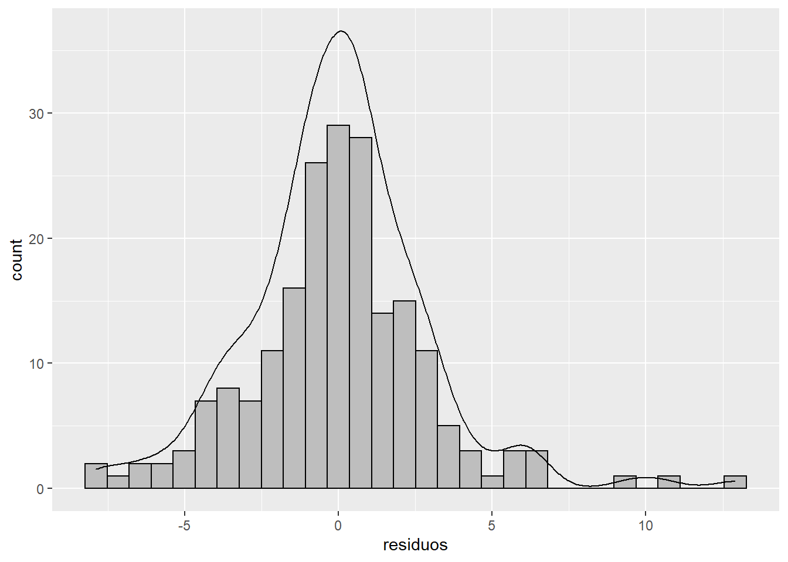
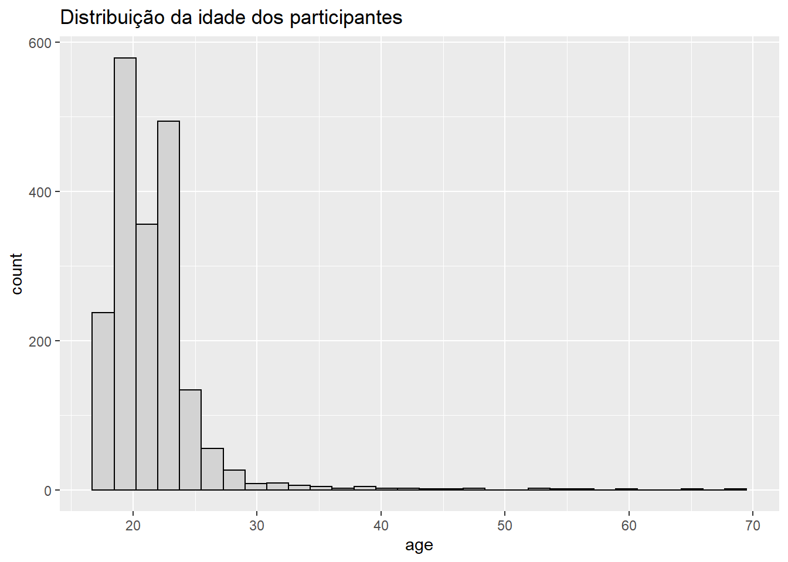

Chapter 2 Estatística Descritiva
Objetivos do capítulo
1. Apresentar os verbos do dplyr e funções do ggplot.
2. Revisitar conceitos básicos de estatística descritiva
3. Ensinar a construção de tabelas e gráficos
Base usada: Dados - Brasil e espanha fusionados AFONSO JR, ARMANDO ; PORTUGAL, A. C. A. ; SANTOS, E. J. R. ; BULLON, F. F. ; VILHENA, J. ; ANUNCIAÇÃO, LUIS . Sintomas de depressão e ansiedade em universitários espanhóis, portugueses e brasileiros. PSICOLOGIA: TEORIA E PESQUISA (UNB. IMPRESSO), 2020.
A apresentação dos resultados de uma pesquisa a partir de gráficos e tabelas é fundamental para disseminação dos achados tanto entre pares acadêmicos como para sociedade em geral. No geral, o R e seus pacotes oferecem excelentes ferramentas para aspectos descritivos. No entanto, algumas apresentações relativamente simples trazem uma dificuldade computacional, o que pode gerar alguma desvantagem na utilização do R para tais apresentações quando comparados com programas mais acessíveis, como o Excel. Apesar dessa condição, a relação entre dificuldade e complexidade favorece o R àquelas tarefas mais complicadas, como realizar análises inferenciais e psicométricas, como apresentado a seguir.

Excel vs R
Posto isso, todo resultado estatístico começa pela apresentação de tabelas e gráficos. Da mesma forma que a construção de um prédio depende que andaimes sejam colocados, um relatório técnico depende dessas condições. Aproveitando um pouco mais esse exemplo, da mesma maneira que a conclusão da construção de um prédio, necessariamente, cursa com a retirada dos andaimes, artigos científicos frequentemente tem espaço limitado para publicação e, consequentemente, os autores se veem na situação de aproveitar apenas parte (ou quase nada) dos relatórios originais.
2.1 Pesquisa
Vamos utilizar a pesquisa intitulada “Sintomas de depressão e ansiedade em universitários espanhóis, portugueses e brasileiros”, com previsão de publicação pela Revista Psicologia: Teoria e Pesquisa em 2019. Nessa pesquisa, sou o coautor e o pesquisador responsável para correspondência.
O objetivo dessa pesquisa foi explorar sintomas de ansiedade e depressão em universitários, bem como investigar possíveis relações entre tais traços latentes e fatores sociodemográficos. Um diferencial importante dessa pesquisa foi a seleção amostral. Partiu-se de uma amostra representativa dos estudantes de três universidades, PUC-Rio (Brasil), Universidade de Extremadura (Espanha) e Universidade de Coimbra (Portugal). Isso permitiu ter maior validade externa dos resultados.
Todo documento acadêmico e científico é composto de aspectos textuais, aspectos tabulares e gráficos que devem caminhar na mesma direção e sempre associados às perguntas e objetivos traçados na pesquisa. Assim, é possível concluir que a parte principal de qualquer trabalho acadêmico não é necessariamente os aspectos estatísticos, mas sim os objetivos e possíveis hipóteses investigadas pelos pesquisadores. A estatística é uma ferramenta de trabalho (ou uma atividade de meio) para que as perguntas sejam respondidas de forma válida.
Conforme já explicitado, a estatística pode ser dividida em duas áreas interligadas: estatística descritiva e estatística inferencial. O objetivo da estatística descritiva é apresentar sínteses e resumos dos resultados a partir de gráficos e tabelas. Não é intenção dessa área fazer generalizações ou extrapolar os resultados obtidos em uma pesquisa a pessoas não investigadas durante a coleta de dados. Por contraste, a estatística inferencial visa extrapolar os dados e fazer generalizações que toquem toda população de onde aquela mostra foi retirada e é representativa. Dessa maneira, o principal objetivo da estatística inferencial é, de fato, fazer inferências.
Apesar de livros e aulas unirem ambas as áreas da estatística, alguns pontos merecem destaque, que são:
A estatística descritiva surgiu antes que a inferencial. A etimologia da palavra talvez ajude a entender, uma vez que estatística vem da palavra estado e este sempre teve interesse em saber quantos eram os cidadãos de um determinado local para, entre outras atividades, taxá-los. Dessa maneira, aspectos descritivos antecedem os inferenciais. Por sua vez, a estatística inferencial guarda origem e proximidade com a teoria dos jogos e, consequentemente, isso ajuda a entender o motivo pelo qual a maioria dos exemplos inferenciais envolvem jogos de azar.
A estatística tem duas “escolas” ou “formas de pensamento”. A estatística frequentista e a estatística bayesiana. Aspectos fundamentais que tocam à definição de probabilidade são diferentes, bem como a definição de dados e parâmetros também o são. Pela perspectiva histórica, a estatística bayesiana é mais antiga que a frequentista. No entanto, se for comparado a proporção de uso entre os pesquisadores, a estatística frequentista é ainda a mais frequente e justifica a ênfase deste livro nesta área.
A relação entre estatística e Machine Learning (ML) é relativamente recente. Apesar de grande interface, e do fato que as análises realizadas em estatística e ML encontram resultados virtualmente idênticos, as áreas têm objetivos diferentes. Ainda sob perspectiva histórica, a estatística, como uma área do conhecimento, é anterior à ML e, também por isso, justifica a ênfase do livro.
2.2 Verbos do dplyr
O dplyr funciona de maneira muito intuitiva. O padrão original do R considera que as operações são realizadas a partir de uma lógica do tipo verbo(sujeito, complemento) enquanto o ambiente tidyverse opta por sujeito %>% verbo(complemento), tornando-se o ato de programar mais natural e associado à maneira que organizamos as ideias.
Os verbos principais do pacote estão listados na tabela a seguir e as sintaxes deixadas no decorrer deste capítulo (e do livro) permitem uma melhor apreensão das funcionalidades. É importante lembrar que, em alguns momentos, em função da praticidade computacional, algumas sintaxes vão contar com o formato base do R.
| Verbo | Ação |
|---|---|
| glimpse | Inspeciona os dados |
| count | Conta os níveis de uma variável |
| select | seleciona uma variável específica |
| filter | Filtra os resultados por um nível específico de uma variável |
| group_by | Agrupa os resultados por níveis de uma variávei específica |
| summarise | Apresenta sumários (com medidas estatísticas) |
| mutate | Cria novas variáveis ou altera as existentes |
| arrange | Organiza a apresentação dos resultados |
| left_join | Junta bases ou colunas |
| gather | Transforma uma base larga em longa |
| spread | Transforma uma base longa em larga |
2.3 Tabelas
Tabelas apresentam as informações de uma pesquisa de maneira reunida e objetiva. Como os verbos do dplyr possibilitam que os mesmos resultados sejam encontrados por vias diferentes, os códigos a seguir tentarão manter uma uniformidade lógica. Em alguns momentos, para ampliar as possibilidades de codificação, sintaxes extras serão oferecidas.
A tabela a seguir apresenta a quantidade de participantes em cada país.
Dataset %>%
group_by(country) %>%
summarise(n=n()) %>%
kable(digits = 2) %>%
kable_styling(bootstrap_options = c("striped", "hover", "condensed"))| country | n |
|---|---|
| Espanha | 1216 |
| Portugal | 426 |
| Brasil | 315 |
É também possível adicionar proporções relativas à tabela, o que é uma escolha adequada para apresentação dos resultados.
Dataset %>%
group_by(country) %>%
summarise(n=n(), Prop = n/nrow(.)) %>%
kable(digits = 2) %>%
kable_styling(bootstrap_options = c("striped", "hover", "condensed"))| country | n | Prop |
|---|---|---|
| Espanha | 1216 | 0.62 |
| Portugal | 426 | 0.22 |
| Brasil | 315 | 0.16 |
O pacote janitor oferece complementos úteis à família tidyverse e um deles justamente adiciona os totais, de maneira mais rápida. Repare que para utilizar o pacote sem tê-lo previamente carregado ao ambiente, basta usar o nome do pacote seguido de ::
Dataset %>%
group_by(country) %>%
summarise(n=n(), prop = n/nrow(.)) %>%
bind_rows(summarise_all(., list(~if(is.numeric(.)) sum(.) else "Total"))) %>%
kable(digits = 2) %>%
kable_styling(bootstrap_options = c("striped", "hover", "condensed"))## Warning in bind_rows_(x, .id): binding factor and character vector,
## coercing into character vector## Warning in bind_rows_(x, .id): binding character and factor vector,
## coercing into character vector| country | n | prop |
|---|---|---|
| Espanha | 1216 | 0.62 |
| Portugal | 426 | 0.22 |
| Brasil | 315 | 0.16 |
| Total | 1957 | 1.00 |
Dataset %>%
group_by(country) %>%
summarise(n=n(), prop = n/nrow(.)) %>%
janitor::adorn_totals("row") %>%
kable(digits = 2) %>%
kable_styling(bootstrap_options = c("striped", "hover", "condensed"))| country | n | prop |
|---|---|---|
| Espanha | 1216 | 0.62 |
| Portugal | 426 | 0.22 |
| Brasil | 315 | 0.16 |
| Total | 1957 | 1.00 |
O mesmo que foi realizado com os países, pode também ser realizado com o sexo do participante.
Dataset %>%
group_by(sex) %>%
summarise(n=n(), prop = n/nrow(.)) %>%
janitor::adorn_totals("row") %>%
kable(digits = 2) %>%
kable_styling(bootstrap_options = c("striped", "hover", "condensed"))## Warning: Factor `sex` contains implicit NA, consider using
## `forcats::fct_explicit_na`| sex | n | prop |
|---|---|---|
| M | 736 | 0.38 |
| F | 1214 | 0.62 |
| NA | 7 | 0.00 |
| Total | 1957 | 1.00 |
A adição do argumento para filtrar os participantes com dados ausentes sobre sexo auxilia a apresentar melhor os resultados. É importante atentar que essa análise tem finalidade descritiva e que omitir a apresentação de variáveis ausentes não significa excluir ou remover os participantes das análises que serão feitas posteriormente. Somente em possibilidades remotas se retira participantes das análises de maneira definitiva.
Dataset %>%
filter(!is.na(sex)) %>%
group_by(sex) %>%
summarise(n=n(), prop = n/nrow(.)) %>%
kable(digits = 2) %>%
kable_styling(bootstrap_options = c("striped", "hover", "condensed"))| sex | n | prop |
|---|---|---|
| M | 736 | 0.38 |
| F | 1214 | 0.62 |
Para fazer uma tabela cruzada, em que seja possível apresentar a quantidade de homens e mulheres por país, a função spread vai ser utilizada.
Dataset %>%
filter(!is.na(sex)) %>%
group_by(country,sex) %>%
summarise(n=n()) %>%
spread(sex, n) %>%
kable(digits = 2) %>%
kable_styling(bootstrap_options = c("striped", "hover", "condensed"))| country | M | F |
|---|---|---|
| Espanha | 384 | 825 |
| Portugal | 203 | 223 |
| Brasil | 149 | 166 |
Finalmente, para apresentar a quantidade de participantes totais, bem como separar a quantidade e a porcentagem de homens e mulheres por país, a codificação torna-se mais densa. O código abaixo apresenta os comentários para auxiliar no entendimento da rotina. Uma vez que a produção de rotinas assim costuma ser bastante demorada e o processo frequentemente gera erros, costumo recomendar utilizar pacotes que exportam os resultados diretamente para o excel. Essa recomendação é feita com cautela, pois o excel não foi feito para lidar com dados dessa natureza e, frequentemente, a probabilidade de ter falhas aumenta.
Dataset %>% #get data
#filter
filter(!is.na(sex)) %>%
#agrupar
group_by(country, add=TRUE) %>%
mutate(participantes = n()) %>%
#adicionar a relacao de quantidade de pais e sexo
group_by(country, sex, participantes, add=TRUE) %>%
summarise(
#cria a contagem de sexo
sex_count = n(),
#cria a porcentagem de sexo por pais
sex_percentage = round(sex_count/first(participantes),2)) %>%
# cria uma variável agrupada
mutate(n_percentage = paste0(sex_count," (",sex_percentage,")")) %>%
#seleciona apenas as variaveis de interesse
select(country, sex, n_percentage, participantes) %>%
#Muda para formato largo de apresentação
spread(sex, n_percentage, fill="-") %>%
#coloca os totais
janitor::adorn_totals("row") %>%
kable(., digits = 2, booktabs = T) %>%
kable_styling(position = "center", full_width = F, bootstrap_options = "striped")| country | participantes | M | F |
|---|---|---|---|
| Espanha | 1209 | 384 (0.32) | 825 (0.68) |
| Portugal | 426 | 203 (0.48) | 223 (0.52) |
| Brasil | 315 | 149 (0.47) | 166 (0.53) |
| Total | 1950 |
|
|
2.4 Gráficos
A máquina gráfica do tidyverse é o ggplot. Pelo menos 3 argumentos são necessários para criação de gráficos, que são:
- O banco dados ‘(data = )’, que pode ser omitido da sintaxe,
- O aspecto estético, que permite diferentes complementos
aes(x = , y = , fill = , color = ),
- O aspecto geométrico, que varia em função do gráfico a ser apresentado
O ggplot também permite realizar transformações dos resultados, alterar o posicionamento dos objetos, quebrar apresentações em função de uma variável, customizar o tema principal e alterar os rótulos de todos os elementos gráficos. É importante notar que apesar dos argumentos utilizados na sintaxe serem similares aos utilizados em toda família tidyverse, a ligação %>% é substituída pelo +.
Quando bem feitos, os gráficos são extremamente úteis. Eles possibilitam buscar padrões e relações entre variáveis, confirmar ou não certas expectativas sobre os dados e descobrir novos fenômenos que poderão ser investigados futuramente (???).
Todo gráfico deve ter um título e uma escala e a maioria dos gráficos são apresentados em um plano com um eixo horizontal (abcissas) e um vertical (ordenadas). Por sua vez, tais planos se referem, nessa ordem, ou aos níveis da variável que está sendo medida e as contagens ou proporções encontradas ou aos níveis da variável independente e os resultados médios da variável dependente.
Para eleger que gráfico será realizado, é necessário responder a duas perguntas:
1. Quantas variáveis serão apresentadas ?
2. Qual o nível de medida da variával independente ?
O diagrama abaixo oferece uma árvore de decisão funcional.
2.5 1 variável discreta
Quando há apenas uma variável categórica, tratada como discreta, os gráficos são criados para apresentar as contagens e/ou as proporções. Nesse caso, é recomendado utilização de um gráfico de barras ou gráfico de setor. Apesar de ser possível apresentar as frequências absolutas, esses resultados podem gerar distorção da informação e, portanto, é preferível sempre apresentar as proporções de ocorrência de uma determinada variável ou valor. Por definição, quando se trabalha com proporções, o valor máximo da soma das proporções é 100.
O gráfico de barras abaixo apresenta a contagem absoluta dos participantes pesquisados em cada país.
ggplot(Dataset, aes(x = country)) +
geom_bar(stats = identity) +
labs(x = "País", title = "Número de participantes nos países investigados")## Warning: Ignoring unknown parameters: stats
Já abaixo, as barras são utilizadas para apresentar as proporções. Um recurso do pacote scales foi utilizado para adequar a visualização das proporções.
ggplot(Dataset, aes(x = country, y = ..prop.., group = 1)) +
geom_bar(stat = "count") +
scale_y_continuous(labels = scales::percent_format()) +
labs(x = "País", title = "Proporção de participantes em cada país investigado")
É também possível apresentar as proporções em uma única barra, cujas cores variam em função dos grupos.
ggplot(Dataset, aes(x= "", y = "perc", fill = country)) +
geom_bar(stat = "identity", position = "stack") +
coord_flip()
Finalmente, o gráfico de setor (as vezes chamado de pizza ou torta) pode também ser utilizado. O aspecto principal desse gráfico é apresentar os setores de maneira proporcional às frequências.
ggplot(Dataset, aes(x= "", y = "perc", fill = country)) +
geom_bar(width = 1, stat = "identity") +
coord_polar(theta="y") +
labs(title = "Proporção de participantes em cada país")
2.6 1 variável contínua
Quando uma única variável é apresentada no gráfico e ela é continua, os gráficos adequados são o histograma, densidade e o boxplot.
Abaixo um histograma da idade dos participantes:
ggplot(Dataset, aes(x = age)) +
geom_histogram(bins = 30, color = "black", fill = "lightgrey") +
labs(title = "Distribuição da idade dos participantes")## Warning: Removed 28 rows containing non-finite values (stat_bin).
Abaixo um gráfico de densidade da idade:
ggplot(Dataset, aes(x = age)) +
geom_density(fill = "lightgray") +
labs(title = "Distribuição da idade dos participantes")## Warning: Removed 28 rows containing non-finite values (stat_density).
Por sua vez, abaixo o boxplot dessa mesma variável:
ggplot(Dataset, aes(y = age, x = "")) +
geom_boxplot() +
labs(title = "Distribuição da idade dos participantes")## Warning: Removed 28 rows containing non-finite values (stat_boxplot).
O boxplot tem vantagens em comparação com os outros gráficos apresentados até agora. A caixa reúne 50% da distribuição (Q1, Mediana e Q3) e os bigodes são construídos com base em Q1 - 1.5*IQR e Q3 + 1.5*IQR.
Apesar de algo difícil de visualizar ao início, a informação apresentada no boxplot e no gráfico de densidade são iguais.
a <- ggplot(Dataset, aes(x = age)) +
geom_density(fill = "lightgray")
b <- ggplot(Dataset, aes(y = age, x = "")) +
geom_boxplot() +
coord_flip()
grid.arrange(a,b, top = "Distribuição da idade dos participantes")## Warning: Removed 28 rows containing non-finite values (stat_density).## Warning: Removed 28 rows containing non-finite values (stat_boxplot).
2.7 2 variáveis (VI discreta)
Por definição, os gráficos de barras ou colunas (considerando aqui as barras de erro) e o boxplot são adequados para apresentar essa relação. Basicamente, esses gráficos permitem verificar a diferença entre os grupos.
O gráfico abaixo mostra os resultados do Inventário Beck de Ansiedade entre 3 países investigados. As barras de erro são importantes para verificar, inicialmente, as possíveis diferenças significativas entre os países.
ggplot(Dataset, aes(x = country, y = bai_sum)) +
geom_bar(stat = "summary") +
stat_summary(geom = "errorbar",fun.data = mean_se) +
labs(title = "Resultados da escala de ansiedade em função do país investigado")## No summary function supplied, defaulting to `mean_se()
O boxplot a seguir também é um gráfico indicado:

2.8 2 variáveis (VI contínua)
Assumindo que a VI é contínua e a VD também, o gráfico de pontos e de dispersão são virtualmente identicos e indicados. Esses gráficos permitem verificar a associação entre as variáveis. No ggoplot, o argumento geom_point e geom_jitter são possíveis. Abaixo, utilizando os pontos.
ggplot(Dataset, aes(x = age, y = bai_sum)) +
geom_point() +
labs(title = "Resultados da escala de ansiedade em função da idade do participante")## Warning: Removed 28 rows containing missing values (geom_point).
Abaixo, utilizando o jitter
ggplot(Dataset, aes(x = age, y = bai_sum)) +
geom_jitter() +
labs(title = "Resultados da escala de ansiedade em função da idade do participante")## Warning: Removed 28 rows containing missing values (geom_point).
Tradicionalmente, de maneira análoga às barras de erros apresentadas em gráficos cujas VIs são discretas, adiciona-se uma linha de regressão amostral quando a VI é contínua, tal como apresentado a seguir.
ggplot(Dataset, aes(x = age, y = bai_sum)) +
geom_jitter() +
geom_smooth(method = "lm") +
labs(title = "Resultados da escala de ansiedade em função da idade do participante")## Warning: Removed 28 rows containing non-finite values (stat_smooth).## Warning: Removed 28 rows containing missing values (geom_point).
2.9 Outros gráficos
Evidentemente, é possível apresentar mais informações nos gráficos com mais de um variável apresentada, desde que elas sejam relacionadas ao problema de pesquisa estudado e não sobrecarreguem a visualização dos resultados. Frequentemente, as informações adicionais são feitas pela inclusão de clusters ou agrupamentos. Isso é tanto possível em gráficos cuja VI seja discreta quanto contínua.
No exemplo abaixo, o gráfico dos resultados do Inventário Beck de Ansiedade entre os 3 países investigados (VI discreta) agora está agrupado pelo sexo do participante.
Dataset %>%
filter(!is.na(sex)) %>%
ggplot(., aes(x = country, y = bai_sum, fill = sex)) +
geom_bar(stat = "summary", position = "dodge") +
stat_summary(geom="errorbar", fun.data = mean_se, position = position_dodge(0.95)) +
labs(title = "Resultados da escala de ansiedade em função da idade e sexo do participante")## No summary function supplied, defaulting to `mean_se()
Já no exemplo abaixo, a relação entre idade e pontuação no Inventário Beck de Ansiedade está agora agrupada pelo sexo do participante.
Dataset %>%
filter(!is.na(sex)) %>%
ggplot(., aes(x = age, y = bai_sum, color = sex)) +
geom_jitter() +
geom_smooth(method = "lm") +
labs(title = "Resultados da escala de ansiedade em função da idade e sexo do participante")## Warning: Removed 24 rows containing non-finite values (stat_smooth).## Warning: Removed 24 rows containing missing values (geom_point).
Em situações onde existe uma grande quantidade de informação para ser apresentada, os resultados começam a se tornar difíceis de serem entendidos. O gráfico abaixo, por exemplo, é excessivamente carregado de informação e, consequentemente, inadequado.
Dataset %>%
filter(!is.na(sex)) %>%
ggplot(., aes(x = age, y = bai_sum, color = sex, shape = country)) +
geom_jitter() +
geom_smooth(method = "lm") +
labs(title = "Resultados da escala de ansiedade em função da idade, país e sexo do participante")## Warning: Removed 24 rows containing non-finite values (stat_smooth).## Warning: Removed 24 rows containing missing values (geom_point).
Em outro sentido, o gráfico a seguir quebra a apresentação dos resultados por país e, com isso, potencializa que a informação seja melhor compreendida.
Dataset %>%
filter(!is.na(sex)) %>%
ggplot(., aes(x = age, y = bai_sum, color = sex)) +
geom_jitter() +
geom_smooth(method = "lm") +
facet_wrap( ~ country) +
labs(title = "Resultados da escala de ansiedade em função da idade, país e sexo do participante")## Warning: Removed 24 rows containing non-finite values (stat_smooth).## Warning: Removed 24 rows containing missing values (geom_point).